ref 0 · south-east, across the pond · 134.9°, -3.3°

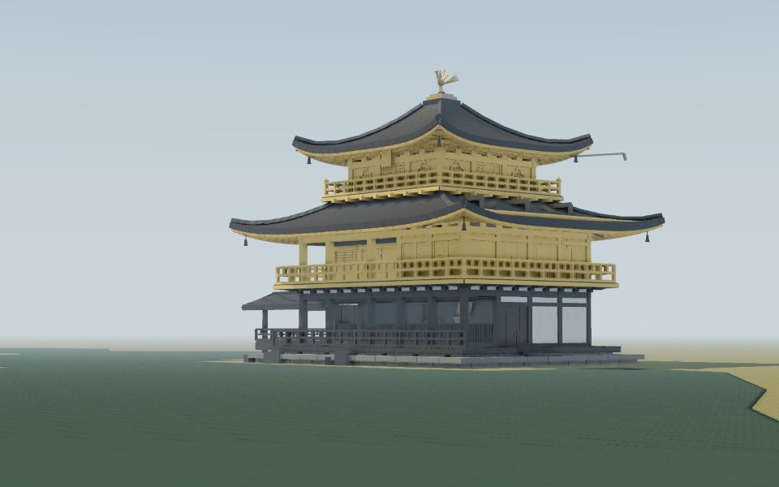
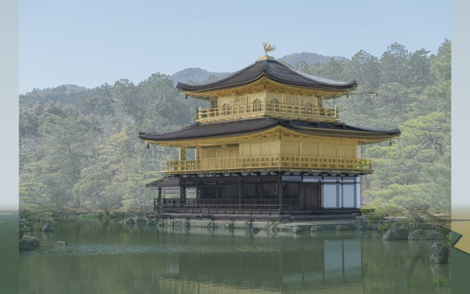
Left: the reference photo. Middle: the model from the same viewpoint. Right: the photo laid over the model at half strength. Write what differs in evidence.comparisons.



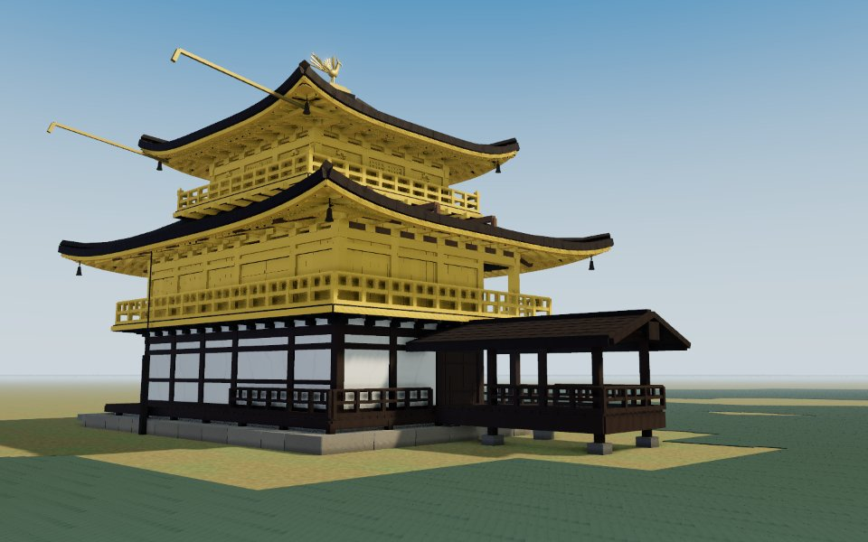
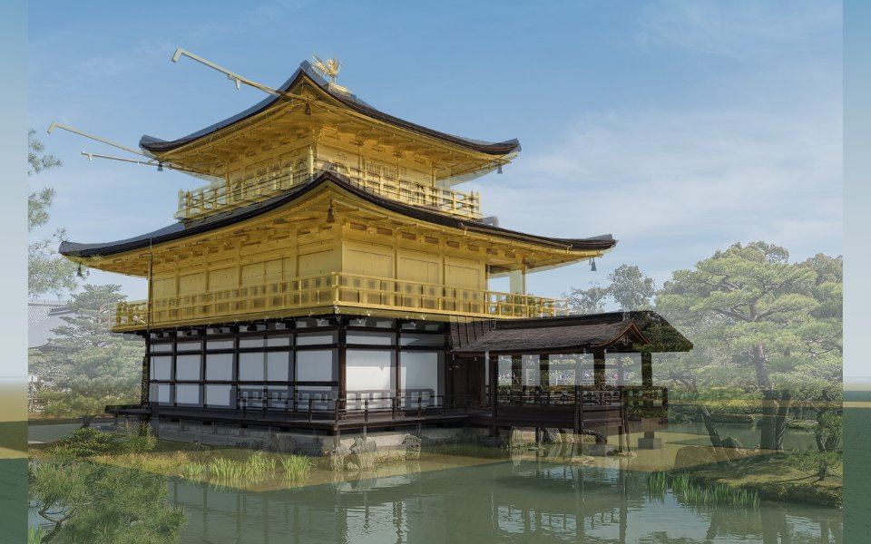
_(11079715494).jpg?width=900)
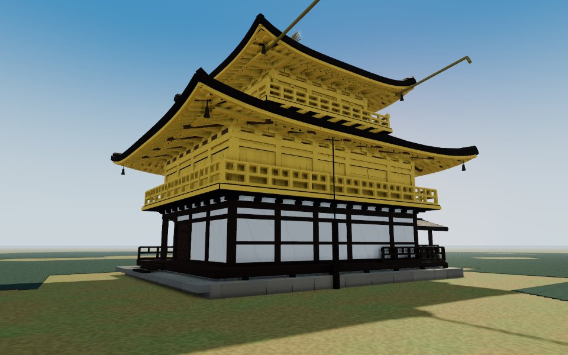
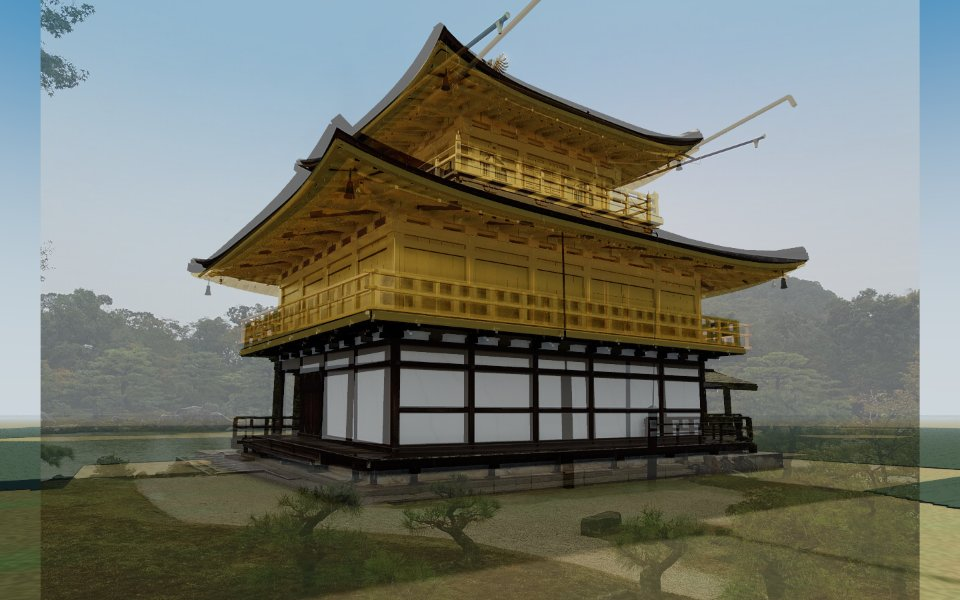
.jpg?width=900)
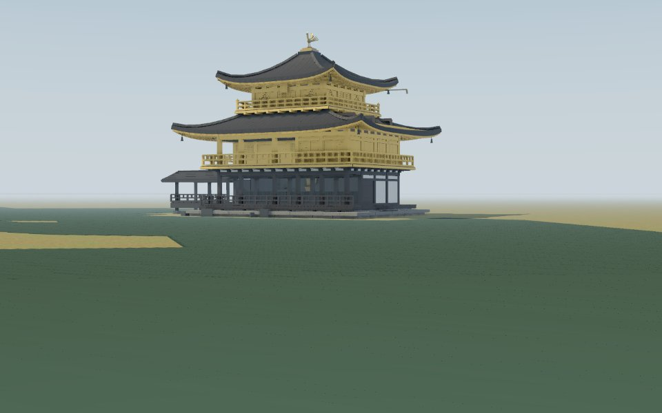
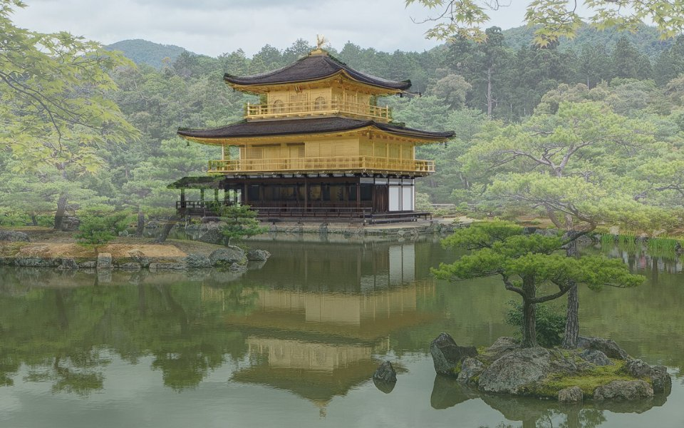
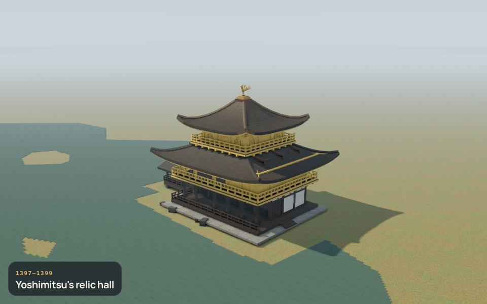
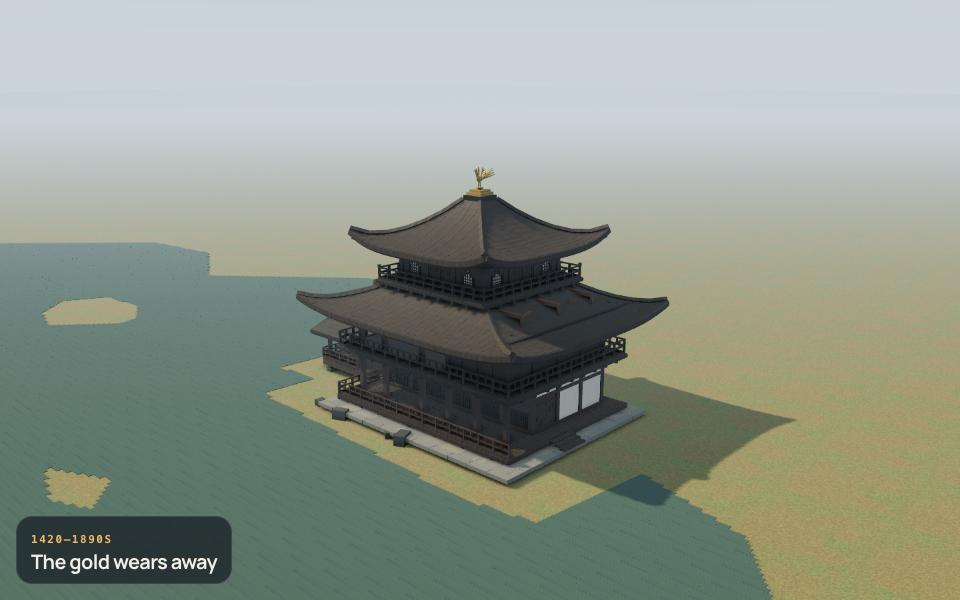
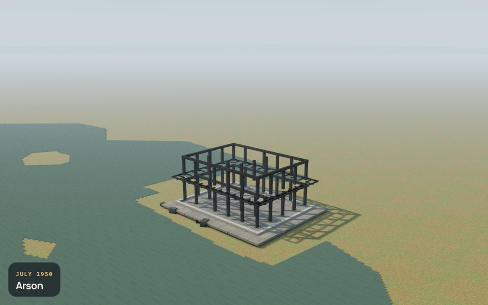
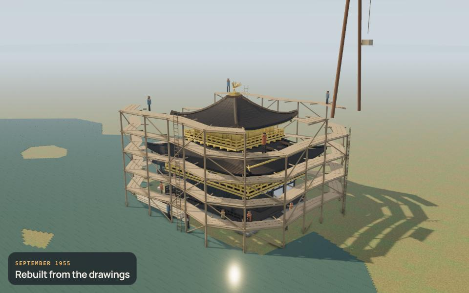
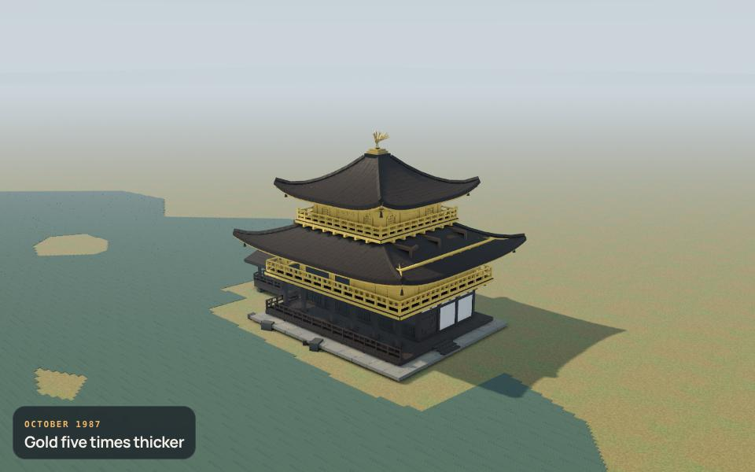
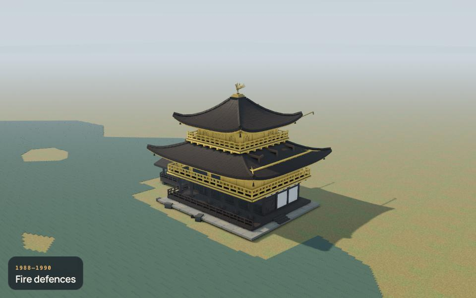
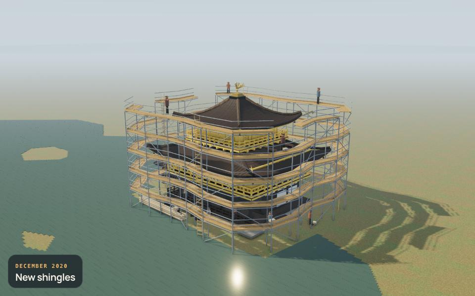